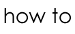

PROPOSALS
How2 is happy to consider proposals for new writing features, critical features and articles, new media work, and conference papers. To avoid disappointment, please bear in mind the style and scope of the journal before sending your proposal.
Proposals for guest-edited sections can be sent to Redell Olsen at redellolsen[at]btinternet[dot]com.
Submissions for Alerts (book reviews and commentaries) can be sent to Kate Fagan at kfag6311[at]mail[dot]usyd[dot]edu[dot]au.
Additions to Postcards can be sent to Lauren Shufran at laurenshufran[at]yahoo[dot]com.
Additions to Updates (event listings, calls for papers, snippets of poetry news) can be sent to John Sparrow at john[dot]d[dot]sparrow[at]gmail[dot]com.
Book listings for InPrint can be sent to Redell Olsen at redellolsen[at]btinternet[dot]com.
HOW TO SUBMIT WRITING TO HOW2
Submissions:
There are a number of ways in which you can submit work for How2. We welcome proposals for curated sections as well as individual submissions (especially those that respond to ideas/projects in our current issue). Please look at latest updates in our calls for papers/contributions section. Also, if you would like to respond to anything in the journal informally or continue to debate any of the issues raised by our journal please send us a postcard....
Proposals for guest-edited sections can be sent to Redell Olsen at redellolsen[at]btinternet[dot]com. Please read the guidelines for section co-ordinators below.
Postcards:
A chance to respond informally to the content of the How2 journal. We are interested in comments and reactions to work that you find here and encourage you to respond to and to extend the questions and debates which interest you in our latest issue and in material contained in our extensive archive. We welcome further discussions of modernist and innovative poetry by women that you feel are relevant to our concerns. Additions to Postcards can be sent to Lauren Shufran at laurenshufran[at]yahoo[dot]com.
Updates:
Updates is a space for you to share news of events in your area with us and to help you to create an international network of events that will link How2 participants together. Please send us your details of reading series, calls for submission to journals and conferences, plus details of launches of new websites, archives etc. that you feel might be of interest to How2 readers and we will post it up. Additions to Updates (event listings, calls for papers, snippets of poetry news) can be sent to John Sparrow at john[dot]d[dot]sparrow[at]gmail[dot]com.
Alerts:
Brief commentaries/ new scholarly finds/ research projects-in-process, improvised conversations concerning books of original poetry & other innovative written forms, including responses to new works of scholarship. We want to know how you are thinking about the works you are reading by women writers in the modernist or experimentalist traditions. Poets, scholars, students, readers are invited to contribute to this section. Send suggestions or finished speculations to: Submissions for Alerts (book reviews and commentaries) can be sent to Kai Fierle-Hedrick at kai_fierle-hedrick[at]graffiti.net or Redell Olsen at redellolsen[at]btinternet[dot]com.
In-Print:
Please send details of new publications by contemporary innovative women writers to Ann Vickery vickery_ann[at]yahoo[dot]com or Kai Fierle-Hedrick at kai_fierle-hedrick[at]graffiti.net.
Please send review copies to be featured in alerts: c/o Redell Olsen, Department of English, Royal Holloway, University of London, Egham, TW20 OEX.
Please send submissions to the relevant guest section editor listed in Masthead. If no section editor is listed, work can be forwarded to Redell Olsen at redellolsen[at]btinternet[dot]com.
PRESENTATION GUIDELINES
Please send your work as a Word document with the suffix .doc to preserve formatting (not in the body of an email). CLEARLY LABEL your submission with your name, follow our presentation guidelines below and please let us know which section you would like it to be considered for.
The standard fonts for How2 are Georgia and Times New Roman; submissions should be in 12 pt and 1.5 or double-spaced.
Please send us your work as a Word document with the suffix .doc to preserve formatting (not in the body of an email), and include How2 in the subject line of your email.
CLEARLY LABEL each submission with your name and email address, and let us know which section of the journal you would like it to be considered for.
Please check that any contributions for papers and essays follow MLA style guidelines. For FAQ on MLA style see: http://www.mla.org/style_faq4
Poetry
If you think that the formatting and layout of your work may suffer in transit then please send us a PDF version of your work also.
Visuals
Visuals should be submitted in any of the following formats:
Jpeg (.jpg, .jpeg)
TIFF (.tif, .tiff)
GIF (.gif)
PNG (.png)
BMP (.bmp)
If your submission contains graphics which are intended for printing and must be high-definition, please submit them in AT LEAST 300dpi. If they are only intended for display on screen, 72dpi will suffice, so please choose your resolution according to need. Images should be no larger than 15 x 10 cm, and must take into account file size (in kb). Please do not send us larger files without consulting us first.
Permission to reproduce visuals must be obtained by authors before submission, and any acknowledgements should be included in the captions.
Multi-media
How2 welcomes submissions of hypertextual poetics and on-line projects which foreground digital writing by women. Please contact the editor with a web link to your project and we can discuss how best to archive your work on our site.
PERMISSIONS
Permission is not required for quotations from published materials for purposes of criticism or review, provided that they are no longer than a single extract of up to 400 words from a prose work, or a series of extracts (none of which exceeds 300 words) totalling 800 words. Up to forty lines from a poem may be quoted, provided that this does not exceed one-quarter of the poem. Appropriate acknowledgement must be given.
Unless agreed with the editor or managing editor of How2 in advance, submission of an article or a poem to How2 will be taken to imply that it presents an original, unpublished work not under consideration for publication elsewhere.
Authors may of course publish their articles or poems elsewhere after publication in How2, provided acknowledgement is given to How2 as the original source of publication.
GUIDELINES FOR SECTION CO-ORDINATORS
Outline of procedures for section co-ordinators:
- Submit proposal for section
-
Liaise with editor or managing editor to refine project, set deadlines and clarify the need for each of the following from yourself and from your contributors:
Introduction
Many section editors write a brief introduction to their contributors' individual papers and poems (approx. 750 - 1500 words).Short bio
(50 – 100 words listing previous publications
and any other
relevant information)Working note
(poetry submitted for workbook, translations, new writing and new media is accompanied by a short contextual reflection by the poet on the working processes and procedures involved in the production of the work, 75 – 250 words).When submitting these extra documents to How(2) please send each as a separate Word file, titled to clearly state the name of the section and the person concerned, e.g. NewwritSmithbio.doc
- Call for submissions (and working notes, bios as appropriate)
- Edit Submissions
- Proof Submissions
- Send Proofed submissions (including bios and working notes if relevant) to editor or managing editor along with list of emails for all contributors
- Liaise with Web master on layout of section
- Send provisional link of website to contributors for final proof
- Pass on any requested changes to Web designer and/or managing editor as appropriate
- Email your contributors to let them know when the new issue has been published
It is your responsibility to work with your contributors in the editing of any work they may submit to you for your section. You may be required to liaise between your section contributors and the editor and managing editor on necessary changes. Please do not expect the editor and managing editor to do this on your behalf.
Please proof all contributions to your section for spelling, formatting and presentation.
Please check that any contributions for papers and essays follow MLA style guidelines. For FAQ on MLA style see: http://www.mla.org/style_faq4